在門牌與屋影之間，看見巷子的從前與現在
順著一張張街景與照片望去，65 巷不再只是地圖上一條筆直的小路。那些屋頂、牆面、門牌與被拆除後留下的空處，彷彿仍在輕聲訴說：巷子會隨時代改變，但人們生活過的痕跡始終留在其中。
國校路65巷今昔之探微
淑敏 整理
這份紀錄以昔日影像與今日街景相互對照，讓國校路 65 巷的變化有了可以凝視的憑據。老宿舍、紅磚牆、鐵皮屋頂與已然消失的屋影，在前後照片之間一一對望；我們也彷彿跟著照片回到巷中，看見這裡曾有的生活，也看見歲月如何悄悄改變一條路的面貌。
壹、國校路65巷的筆直記憶
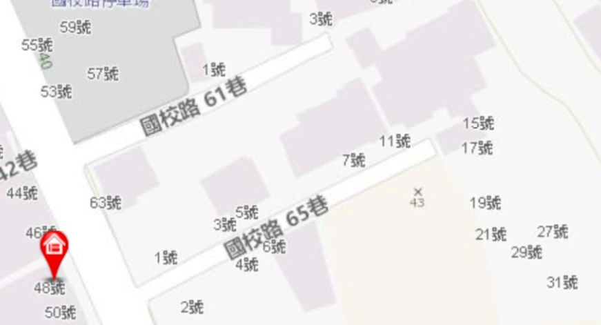
走入國校路65巷與61巷，筆直整齊的巷道，彷彿仍停留在日治時期。
這裡曾是新店公學校教師宿舍區，規格化的道路與集中配置的宿舍，展現當年文教區特有的秩序與安靜氣息。
與一般自然形成的老街不同，這種「筆直如箭」的街廓，是日治時期都市規畫留下的痕跡。
如今走在巷中，不只是經過一條老路，更像慢慢閱讀新店百年前的生活故事。
貳、國校里65巷與其1、2、3、4、5、6、7、9、11、15、17號之
今昔（2025/4←→2019/9）Google街景對照：
2019/9
2025/4
一（1）1號
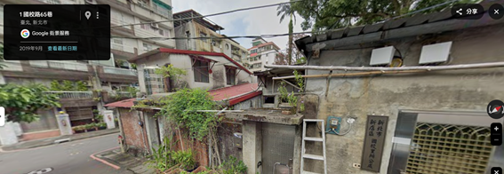
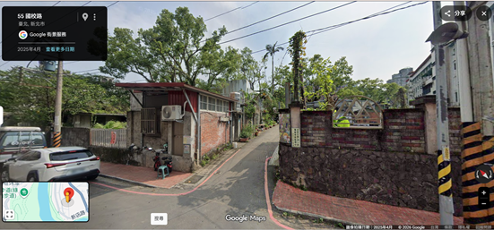
（2）3號
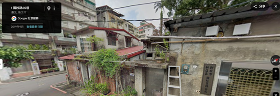
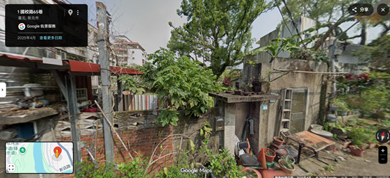
（3）3-5號
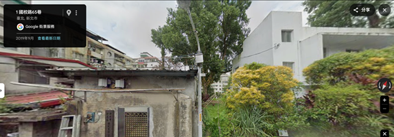
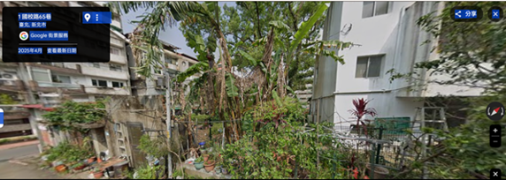
（4）
5號
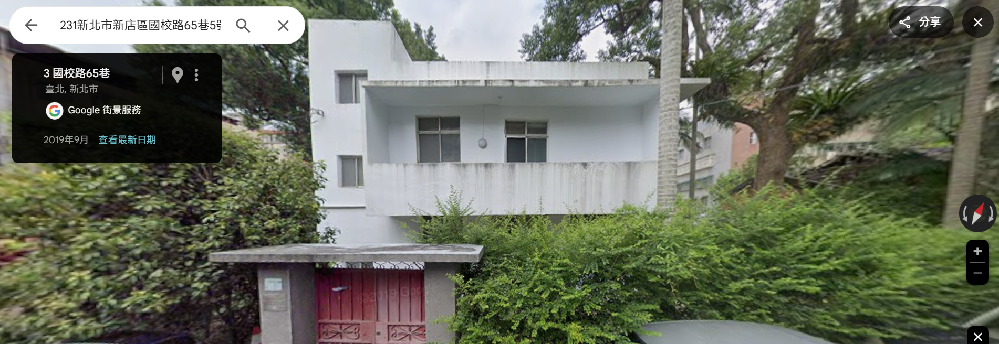
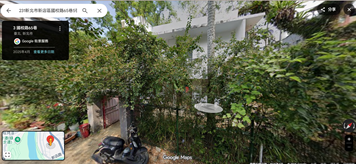
二
2號
紅鐵皮屋頂與紅磚屋
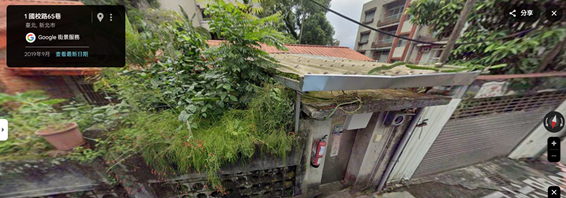
2號已拆除
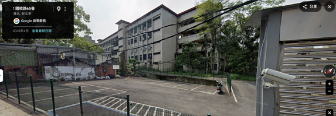
2號
紅鐵皮屋頂與紅磚屋（範圍也太大了吧！）
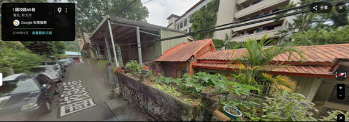
2019/9
2025/4
三
4號
疑是4號（綠鐵皮屋泥封的水泥大門上置花盆）
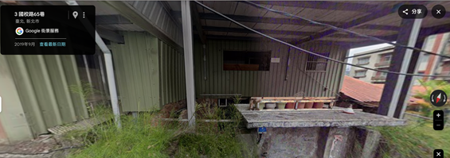
4號已拆除
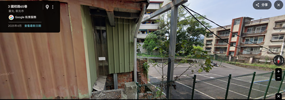
四
6號
疑是6號（紅鐵皮屋其左邊是新店國小鋼製柵欄側門）
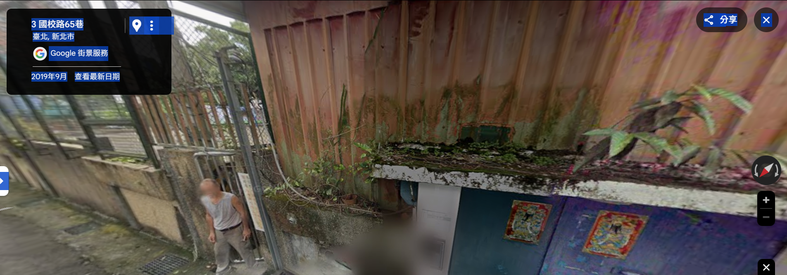
6號
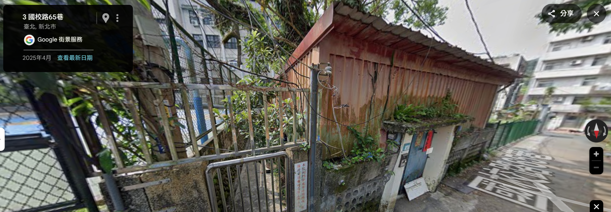
五
7、9號
7、9號新店國小昔教務主任宿舍
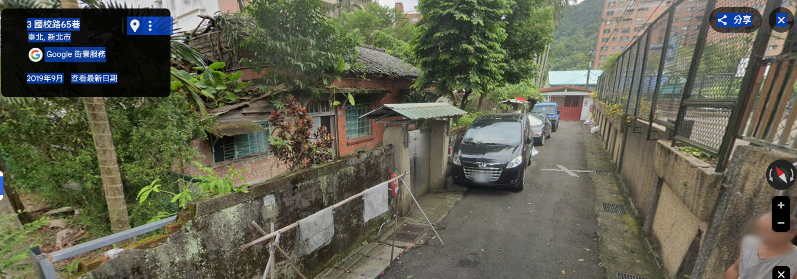
7號、9號（今列為歷史建築）
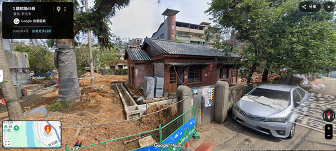
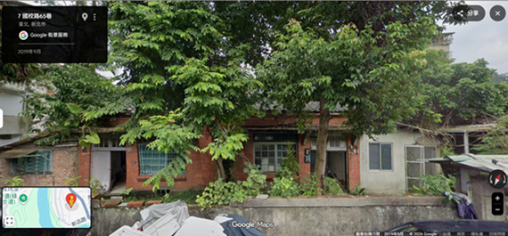
六
11號
疑是11號，車頭之入門處
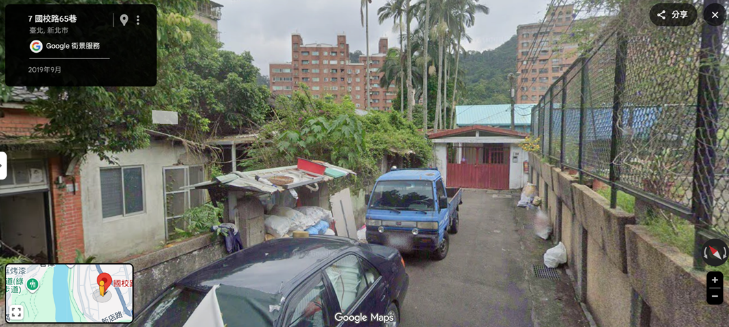
11號（與9號接連的灰牆已拆除剩下一堆紅磚頭）
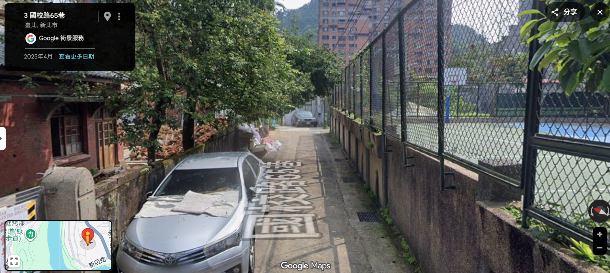
2019/9
2025/4
七15號
疑是15號門口，且右邊是17號（即紅門右邊，圍牆之後）
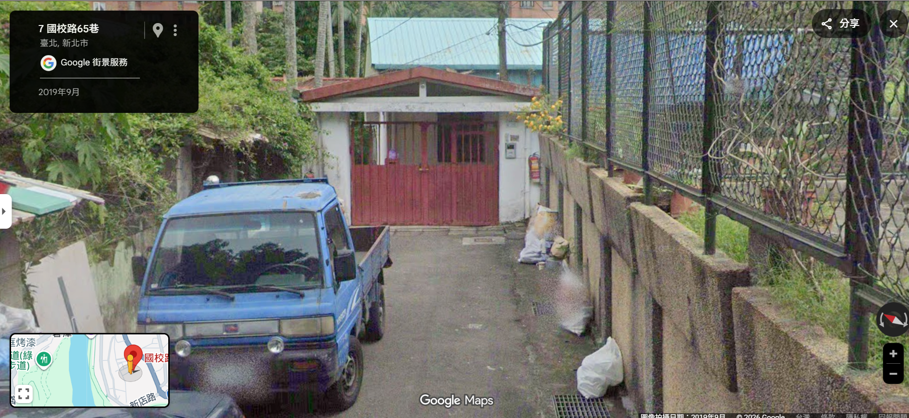
15號（紅色大門、淡藍色鐵皮屋頂均不見）
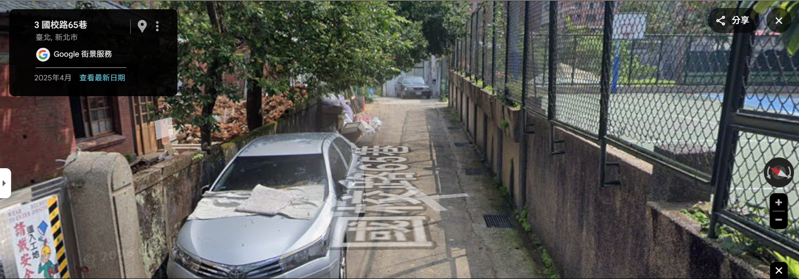